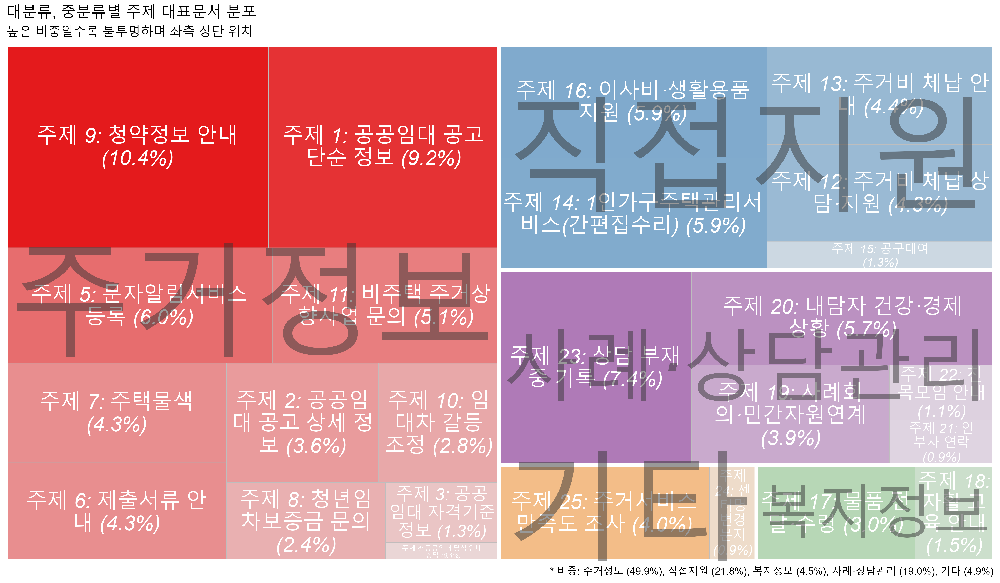
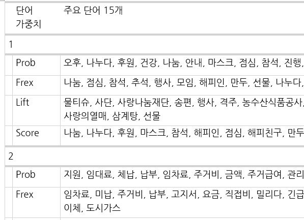
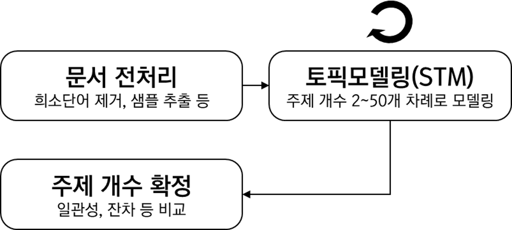
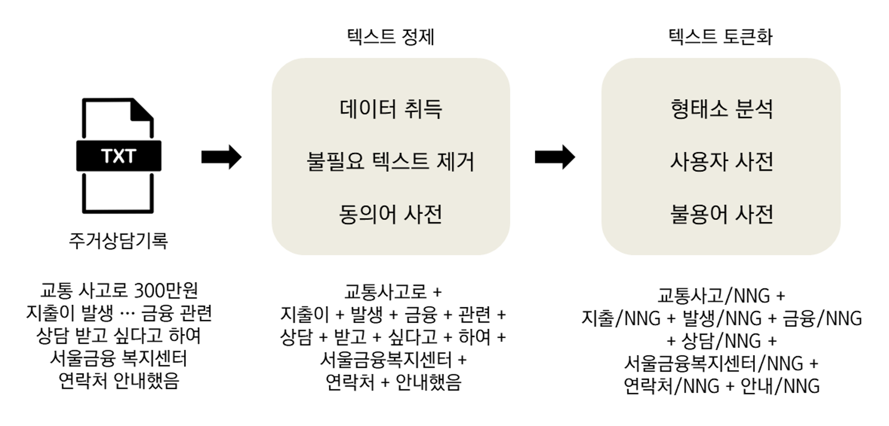
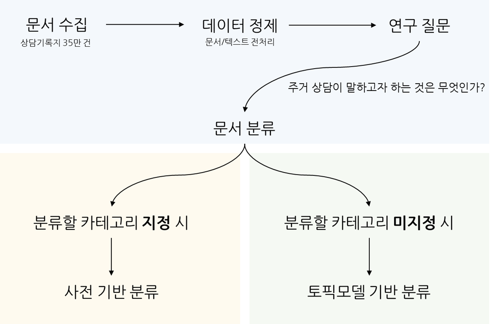
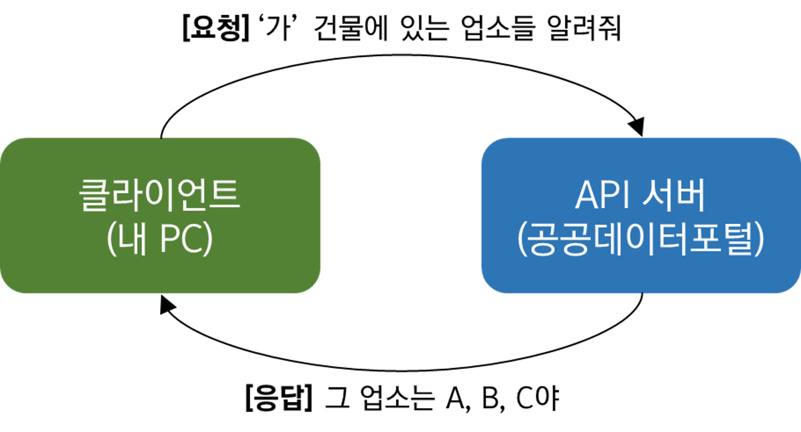
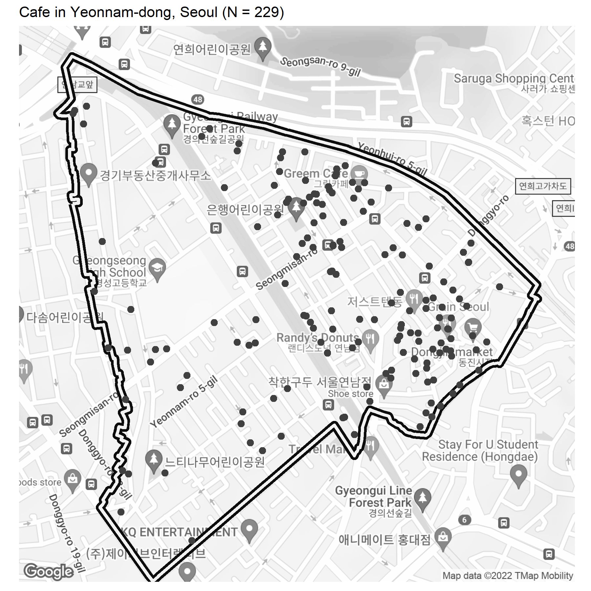

토픽모델링 주제와 메타데이터 간 분석

토픽모델링 주제의 비중과 분포 정보 추출

토픽모델링의 주제 이름을 주요 단어, 대표문서를 참고하여 명명

토픽모델링의 최종 주제 개수 결정

텍스트 정제와 형태소분석을 포함한 텍스트 전처리 과정

주거상담기록 텍스트 데이터를 분석하는 시리즈의 개요

Open API로 공개된 공공데이터를 R로 수집해보자

구글 지도에 등록된 POI 정보를 R을 활용하여 모아보자